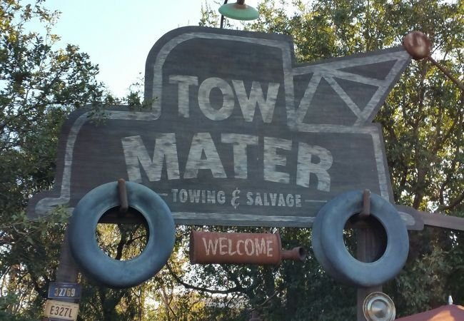

渓谷の廃品集積場
DATE: 2025/12/22
アパラチアの「森林地帯」にあるロケーションで、プレイヤーが所有権を主張できるワークショップの一つです。
1. 概要
場所:
インターステート59号線のすぐそばに位置し、森林地帯でも最大級の廃品置き場です。背景:
2025年に設立されました。
一時期はレスポンダーによって使用されていましたが、現在は無人となり、ウェイストランダーたちが物資を探しに来る場所となっています。
2. ワークショップの特徴
この場所を確保することで、以下の資源を抽出・利用できます。
資源:
ブラックチタン
ジャンク
コンクリート
木材- 木材の山付近に抽出機を設置可能
設置済みの設備:
パワーアーマーステーション（メインハウスの前）
ケミストリーステーション（近くの小屋の中）
3. 出現する敵
ワークショップ確保時には、以下の敵を一掃する必要があります。
4. トリビア

看板のデザインは、ディズニー・カリフォルニア・アドベンチャーにある「メーターのジャンクヤード・ジャンボリー」のアトラクション看板をモデルにしています。
カットされたコンテンツでは「Remus' Junkyard（リーマスのジャンクヤード）」という名前で、Old Man Remusという所有者がいた痕跡があります。
感想
さらに、ジャンクやコンクリートの抽出も可能で、運が良ければパワーアーマー本体まで手に入るというのは、ゲームを始めたばかりのプレイヤーにとっては、まさに「占領するべき拠点」だと感じました。
これはFalloutシリーズ特有の「環境ストーリーテリング（言葉ではなく配置された物で物語を語る手法）」の典型例です。
かつてここでレイダーたちが処刑や拷問ごっこを行っていたのか、あるいはもっと恐ろしい実験が行われていたのか……想像力を掻き立てられると同時に、この世界の残酷さを静かに物語っています。
総評： 資源の美味しさに目がくらんで確保しに行くと、トレーラーの中の電気椅子を見て肝を冷やす……そんな「実利とホラーが同居する非常にFalloutらしい魅力的なロケーションだと思いました。
後初心者さんはワークショップはPvPエリアということに気をつけてね。
1. 初心者への「過分な恩恵」
「森林地帯」という初心者向けの安全なエリアにありながら、ブラックチタン（パワーアーマー「エクスカベーター」の作成などで必要になる貴重な素材）が手に入れれる場所です。さらに、ジャンクやコンクリートの抽出も可能で、運が良ければパワーアーマー本体まで手に入るというのは、ゲームを始めたばかりのプレイヤーにとっては、まさに「占領するべき拠点」だと感じました。
2. 環境ストーリーテリングの不気味さ
一見ただの廃品置き場ですが、「ロックされたトレーラーの中に電気椅子と死体がある」という記述にはゾッとしました。これはFalloutシリーズ特有の「環境ストーリーテリング（言葉ではなく配置された物で物語を語る手法）」の典型例です。
かつてここでレイダーたちが処刑や拷問ごっこを行っていたのか、あるいはもっと恐ろしい実験が行われていたのか……想像力を掻き立てられると同時に、この世界の残酷さを静かに物語っています。
総評： 資源の美味しさに目がくらんで確保しに行くと、トレーラーの中の電気椅子を見て肝を冷やす……そんな「実利とホラーが同居する非常にFalloutらしい魅力的なロケーションだと思いました。
後初心者さんはワークショップはPvPエリアということに気をつけてね。
This article uses material from the “Endor” article on the Star Wars wiki at Fandom and is licensed under the Creative Commons Attribution-Share Alike License.